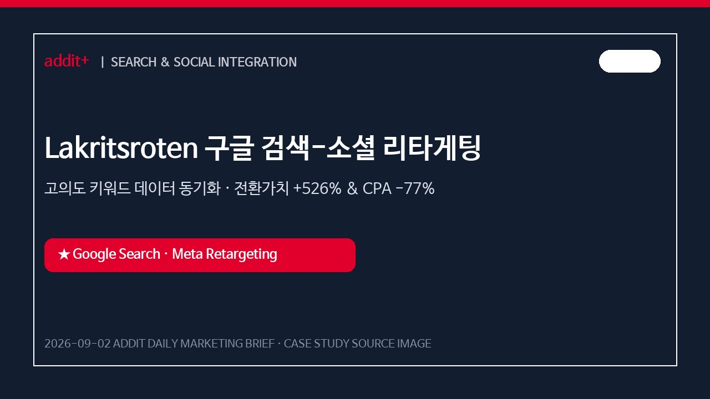
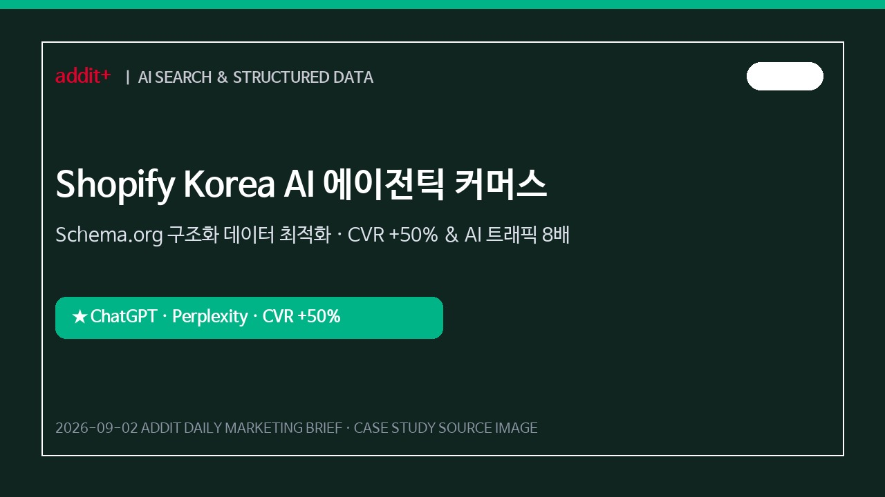
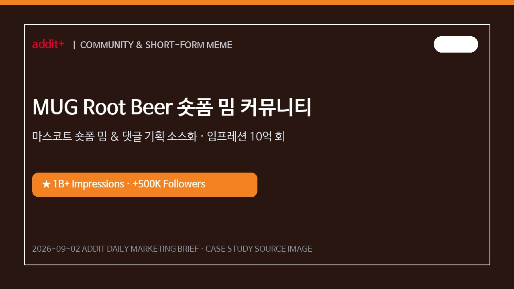
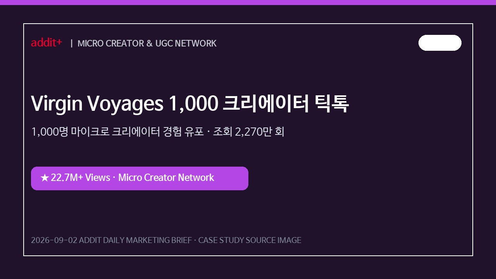
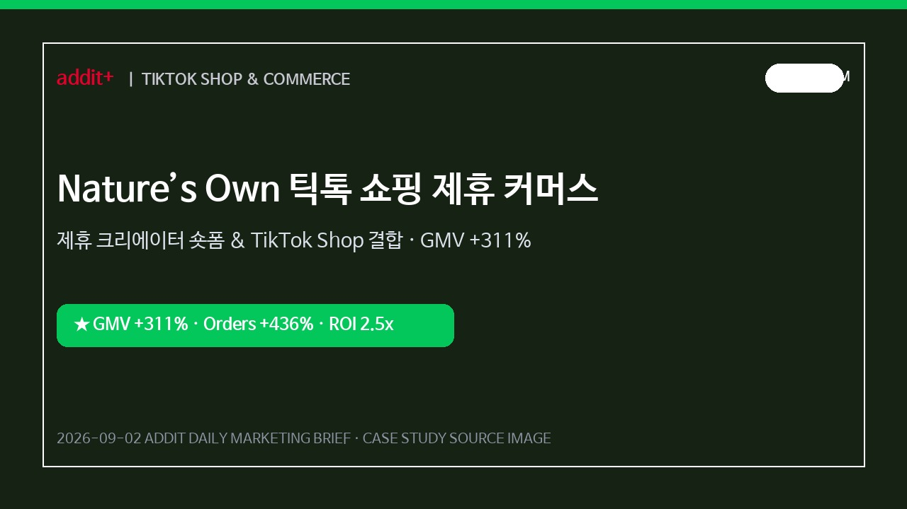
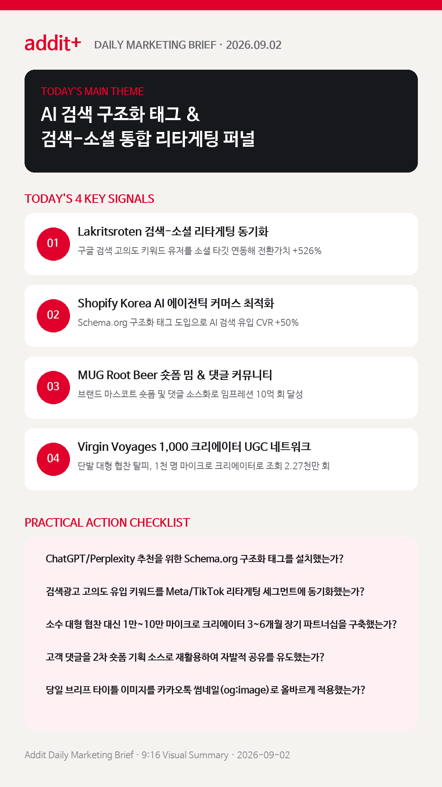

01
AI 검색 최적화(AEO·GEO)와 에이전틱 커머스 전환이 정착된다
ChatGPT, Gemini 등 AI 답변 내 브랜드 노출을 위한 구조화 데이터 및 제품 비교 가이드 구축이 이커머스 필수 과제로 부상합니다. (SHOPIFY)
Lakritsroten 구글 검색-소셜 리타게팅 연동, Shopify AI 에이전틱 최적화, MUG Root Beer 숏폼 밈 커뮤니티, Virgin Voyages 1,000 크리에이터 UGC 성과 전략을 한눈에 확인합니다.
ChatGPT, Gemini 등 AI 답변 내 브랜드 노출을 위한 구조화 데이터 및 제품 비교 가이드 구축이 이커머스 필수 과제로 부상합니다. (SHOPIFY)
대형 인플루언서 단발성 광고 대신 1만~10만 팔로워 크리에이터 다수의 실사용 숏폼 및 UGC를 3~6개월 장기 운용합니다. (SPROUT SOCIAL)
Google 검색광고의 고의도 유입 키워드를 Meta/TikTok 리마케팅 세그먼트에 실시간 동기화하여 CPA를 77% 낮춥니다. (BRIGHTBID)
브랜드 마스코트 숏폼 밈과 함께 유저 댓글을 2차 콘텐츠 소스로 변환해 자발적 참여와 소셜 임프레션 10억 회를 달성합니다. (VAYNERMEDIA)
TikTok Shop 쇼핑 태그 및 크리에이터 제휴 커머스를 연동하여 GMV 311% 증가 및 주문량 436% 급증 성과를 올립니다. (TIKTOK FOR BUSINESS)

KOREA검색 유입 유저의 구매 의도 키워드를 Meta 리마케팅 타깃으로 동기화해 전환가치 526% 증가 및 CPA 77% 감소를 달성했습니다.

KOREA상세페이지 SKU, 리뷰, FAQ 구조화 태깅 및 AI 비교 가이드를 배치해 AI 검색 유입 트래픽 8배 및 CVR 50% 상승을 기록했습니다.

GLOBAL댓글 기반 연속 영상 제작으로 소셜 임프레션 10억 회 이상 및 팔로워 50만 명 증가를 유도해 브랜드 팬덤을 형성했습니다.

GLOBAL단발성 대형 협찬 대신 다수 크리에이터의 생생한 여행 숏폼을 유포해 누적 노출 2,270만 회 및 예약 전환을 이끌어냈습니다.

PLATFORM실제 식습관 사용 숏폼에 쇼핑 태그를 결합하고 이노베이션 광고를 연동하여 GMV 311% 증가 및 주문량 436% 급증을 기록했습니다.
ChatGPT, Perplexity 답변에 제품이 추천되도록 웹사이트 랜딩 페이지 내 제품 사양, 후기, FAQ 구조화 데이터 태깅을 우선 수행합니다.
Shopify AI Search 리포트 근거 보기 →1회성 대형 인플루언서 협찬보다 1만~10만 팔로워 라인의 전문 크리에이터 10~30명과 3~6개월 장기 계약을 맺고 실제 사용 숏폼을 발행합니다.
Sprout Social 인플루언서 리포트 근거 보기 →구글/네이버 검색광고의 고의도 유입 키워드를 Meta 및 TikTok 리마케팅 세그먼트에 실시간 연동하여 CAC를 낮춥니다.
BrightBid Lakritsroten 사례 근거 보기 →브랜드 고유의 마스코트를 설정하고 댓글 커뮤니티와 연계된 시리즈 숏폼을 제작하여 유저의 자발적 저장 및 공유를 유도합니다.
VaynerMedia MUG Root Beer 사례 근거 보기 →검색-소셜 리타게팅 연동 성과와 AI 에이전틱 커머스 구조화 데이터 가이드를 분석합니다.
BrightBid 바로가기 →MUG Root Beer 댓글 밈 마케팅 및 Virgin Voyages 1,000 마이크로 UGC 성공 모델을 확인합니다.
VaynerMedia 바로가기 →
마케팅 성과는 단순 키워드 입찰에서 AI 에이전트 맞춤 구조화 태깅, 검색-소셜 리타게팅 동기화, 마이크로 UGC 상시화의 통합 퍼널 구축으로 완성됩니다.
{kind=link}